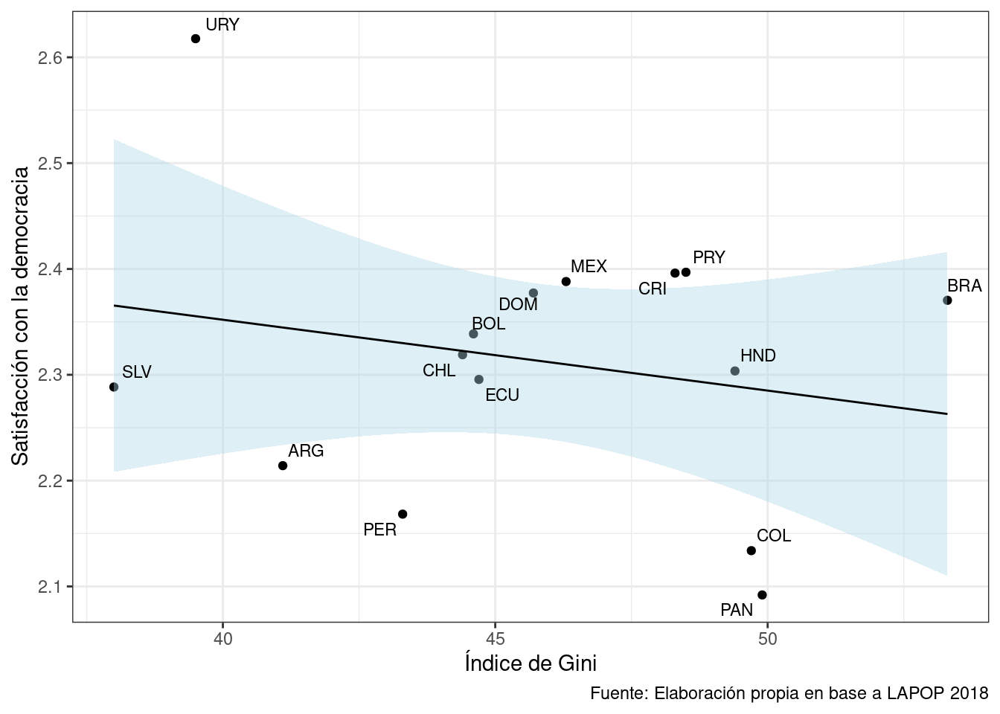
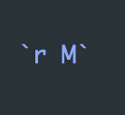

Reportes dinámicos 2
Completar hasta as 11:59 PM del viernes, 29 de septiembre de 2023
Objetivo de la práctica
El objetivo de esta guía práctica es aprender cómo crear y mostrar tablas y gráficos en documentos dinámicos mediante R Markdown. Además, aprenderemos cómo autoreferenciar elementos dentro de nuestro documento Rmd.
En detalle, aprenderemos:
- Generación y presentación de tablas en R Markdown.
- Generación y presentación de gráficos en R Markdown.
- Cómo autoreferenciar elementos dentro un documento R Markdown.
Recursos de la práctica
En esta práctica trabajaremos con un subconjunto de datos previamente procesados derivados de las encuestas realizadas en diferentes países por el Latin American Public Opinion Proyect (LAPOP) en su ola del 2018. Para este ejercicio, obtendremos directamente esta base desde internet. No obstante, también tienes la opción de acceder a la misma información a través del siguiente enlace: LAPOP 2018. Desde allí, podrás descargar el archivo que contiene el subconjunto procesado de la base de datos LAPOP 2018.
Crear un documento R Markdown
Recordemos que, para generar un archivo en Rmarkdown, hacemos lo siguiente:

Chunks
Para integrar código de R en un archivo RMarkdown usamos los chunks, que son trozos de código dentro de nuestra hoja. Estos permiten hacer análisis dentro del documento visualizando los resultados en el documento final.
Los chunks se ven así dentro del .Rmd:
```{r}
# El codigo va aquí
```Insertar chunks
Hay tres formas de insertar chunks:
Pulsar
⌘⌥Ien macOS oControl + Alt + Ien WindowsPulsa el botón “Insert” en la parte superior de la ventana del editor
- Escribirlo manualmente (no recomendado)
Nombre de chunk
Para añadir un nombre, inclúyelo inmediatamente después de la {r en la primera línea del chunk. Los nombres no pueden contener espacios, pero sí guiones bajos y guiones.
Importante: Todos los nombres de chunk de tu documento deben ser únicos.
```{r nombre-chunk}
# El codigo va aquí
```Opciones de chunk
Hay distintas opciones diferentes que puedes establecer para cada chunk. Puedes ver una lista completa en la Guía de referencia de RMarkdown o en el sitio web de knitr.
Las opciones van dentro de la sección {r} del chunk:
```{r nombre-chunk, message = FALSE, echo = TRUE}
# El codigo va aquí
```Otra forma de hacerlo es configurar las opciones generales de todos los chunks que hagamos al inicio del documento:
```{r setup, include = FALSE}
knitr::opts_chunk$set(echo = TRUE,
message = FALSE,
warning = FALSE)
```De esta manera ya no es necesario indicar en cada chunk las opciones, y se aplicaran las configuraciones generales que indicamos al comienzo.
Preparación de datos
Comencemos por preparar nuestros datos. Iniciamos cargando las librerías necesarias.
pacman::p_load(tidyverse, # Manipulacion datos
sjmisc, # Descriptivos
kableExtra, #Tablas
ggrepel) # Graficos
options(scipen = 999) # para desactivar notacion cientifica
rm(list = ls()) # para limpiar el entorno de trabajoCargamos los datos desde internet.
load(url("https://github.com/cursos-metodos-facso/datos-ejemplos/raw/main/lapop_proc_2018.RData")) #Cargar base de datosA continuación, exploramos la base de datos lapop.
names(lapop) # Nombre de columnas [1] "year" "pais" "pais_name" "idnum" "upm"
[6] "strata" "wt" "weight1500" "sexo" "edad"
[11] "educ" "l1" "ideologia_f" "empleo" "decile"
[16] "it1" "prot3" "aoj12" "b2" "b3"
[21] "b4" "b10a" "b12" "b20" "b20a"
[26] "b21" "b21a" "n9" "n11" "n15"
[31] "ros4" "ing4" "eff1" "pn4" "exc7"
[36] "pol1" "vb2" "gini" "gdp" dim(lapop) # Dimensiones[1] 23386 39Contamos con 39 variables (columnas) y 23.386 observaciones (filas).
Tablas en R Markdown
Para generar tablas en R Markdown usaremos la función kable() del paquete kableExtra (hay otras maneras, pero esta es de las más útiles).
Primero, generaremos un objeto llamado tab1 que usaremos como contenido de la tabla. Este objeto tendrá la distribución de it1 por país.
tab1 <- lapop %>%
group_by(pais, it1) %>% # agrupamos por pais y variable
summarise(n = n()) %>% # contamos por categ de respuesta
mutate(prop = round((n / sum(n)) * 100, 2)) %>% # porcentaje
na.omit() %>% # borramos NA
pivot_wider(id_cols = pais, names_from = it1, values_from = prop) # convertimos a formato ancho
tab1# A tibble: 15 × 5
# Groups: pais [15]
pais `1` `2` `3` `4`
<chr> <dbl> <dbl> <dbl> <dbl>
1 ARG 7.98 21.7 45.1 23.2
2 BOL 13.6 40.5 31.9 11.6
3 BRA 12.9 45.4 19.8 19.8
4 CHL 10.6 23.4 40.5 24.6
5 COL 9.14 25.7 34.4 29.0
6 CRI 8.53 22.6 34.6 32.2
7 DOM 11.3 29.0 31.3 24.0
8 ECU 11.7 37.8 32.2 17.3
9 HND 14.0 28.6 22.8 29.3
10 MEX 11.2 33.2 31.5 20.7
11 PAN 14.2 34 31.5 18.5
12 PER 14.9 42.3 31.2 10.6
13 PRY 9.7 24.1 35.6 26.9
14 SLV 8.6 32.3 26.3 29.2
15 URY 7.08 18.7 43.8 27.1Creemos nuestra tabla. Usemos primero la función kable() directamente:
tab1 %>%
kableExtra::kable()| pais | 1 | 2 | 3 | 4 |
|---|---|---|---|---|
| ARG | 7.98 | 21.66 | 45.09 | 23.23 |
| BOL | 13.56 | 40.49 | 31.87 | 11.59 |
| BRA | 12.88 | 45.39 | 19.76 | 19.76 |
| CHL | 10.56 | 23.44 | 40.54 | 24.60 |
| COL | 9.14 | 25.74 | 34.40 | 28.98 |
| CRI | 8.53 | 22.58 | 34.64 | 32.25 |
| DOM | 11.28 | 29.02 | 31.27 | 24.01 |
| ECU | 11.68 | 37.83 | 32.22 | 17.29 |
| HND | 14.04 | 28.65 | 22.82 | 29.29 |
| MEX | 11.20 | 33.16 | 31.46 | 20.70 |
| PAN | 14.24 | 34.00 | 31.49 | 18.47 |
| PER | 14.92 | 42.34 | 31.23 | 10.59 |
| PRY | 9.70 | 24.09 | 35.64 | 26.86 |
| SLV | 8.60 | 32.30 | 26.27 | 29.19 |
| URY | 7.08 | 18.72 | 43.77 | 27.07 |
Ahora tenemos una tabla, pero es muy simple y poco presentable. Especifiquemos opciones de formato:
format: para especificar formato de la tabla (html, markdown, latex)align: para especificar alineacion de las celdas (‘r’=derecha, ‘c’=centro, ‘l’=izquierda),col.names: para nombres de columnas visibles en la tabla, se ingresan como un vectorc()
tab1 %>%
kableExtra::kable(format = "html",
align = "c",
col.names = c("País", "Nada confiable", "Poco confiable", "Algo confiable", "Muy confiable"))| País | Nada confiable | Poco confiable | Algo confiable | Muy confiable |
|---|---|---|---|---|
| ARG | 7.98 | 21.66 | 45.09 | 23.23 |
| BOL | 13.56 | 40.49 | 31.87 | 11.59 |
| BRA | 12.88 | 45.39 | 19.76 | 19.76 |
| CHL | 10.56 | 23.44 | 40.54 | 24.60 |
| COL | 9.14 | 25.74 | 34.40 | 28.98 |
| CRI | 8.53 | 22.58 | 34.64 | 32.25 |
| DOM | 11.28 | 29.02 | 31.27 | 24.01 |
| ECU | 11.68 | 37.83 | 32.22 | 17.29 |
| HND | 14.04 | 28.65 | 22.82 | 29.29 |
| MEX | 11.20 | 33.16 | 31.46 | 20.70 |
| PAN | 14.24 | 34.00 | 31.49 | 18.47 |
| PER | 14.92 | 42.34 | 31.23 | 10.59 |
| PRY | 9.70 | 24.09 | 35.64 | 26.86 |
| SLV | 8.60 | 32.30 | 26.27 | 29.19 |
| URY | 7.08 | 18.72 | 43.77 | 27.07 |
Ahora agregemos otros elementos importantes, como el título, estilo y fuente a la tabla:
caption: para dar titulo de la tablakable_classic(): para dar estilo (revisar otros aquí)add_footnote(): para agregar fuente o pie a la tabla
tab1 %>%
kableExtra::kable(format = "html",
align = "c",
col.names = c("País", "Nada confiable", "Poco confiable", "Algo confiable", "Muy confiable"),
caption = "Tabla 1. Confianza interpersonal según país") %>%
kableExtra::kable_classic() %>%
kableExtra::add_footnote(label = "Fuente: Elaboración propia en base a LAPOP 2018.")| País | Nada confiable | Poco confiable | Algo confiable | Muy confiable |
|---|---|---|---|---|
| ARG | 7.98 | 21.66 | 45.09 | 23.23 |
| BOL | 13.56 | 40.49 | 31.87 | 11.59 |
| BRA | 12.88 | 45.39 | 19.76 | 19.76 |
| CHL | 10.56 | 23.44 | 40.54 | 24.60 |
| COL | 9.14 | 25.74 | 34.40 | 28.98 |
| CRI | 8.53 | 22.58 | 34.64 | 32.25 |
| DOM | 11.28 | 29.02 | 31.27 | 24.01 |
| ECU | 11.68 | 37.83 | 32.22 | 17.29 |
| HND | 14.04 | 28.65 | 22.82 | 29.29 |
| MEX | 11.20 | 33.16 | 31.46 | 20.70 |
| PAN | 14.24 | 34.00 | 31.49 | 18.47 |
| PER | 14.92 | 42.34 | 31.23 | 10.59 |
| PRY | 9.70 | 24.09 | 35.64 | 26.86 |
| SLV | 8.60 | 32.30 | 26.27 | 29.19 |
| URY | 7.08 | 18.72 | 43.77 | 27.07 |
| a Fuente: Elaboración propia en base a LAPOP 2018. |
¿Muy grande? También podemos ajustar el ancho que ocupa la tabla, el tamaño de la letra y la posición:
full_width: para indicar si la tabla cubre todo el ancho o no (TRUE/FALSE)position: para indicar posición de la tabla en el documentofont_size: para indicar tamaño de la letra
tabla1 <- tab1 %>%
kableExtra::kable(format = "html",
align = "c",
col.names = c("País", "Nada confiable", "Poco confiable", "Algo confiable", "Muy confiable"),
caption = "Tabla 1. Confianza interpersonal según país") %>%
kableExtra::kable_classic(full_width = FALSE, position = "center", font_size = 14) %>%
kableExtra::add_footnote(label = "Fuente: Elaboración propia en base a LAPOP 2018.")
tabla1| País | Nada confiable | Poco confiable | Algo confiable | Muy confiable |
|---|---|---|---|---|
| ARG | 7.98 | 21.66 | 45.09 | 23.23 |
| BOL | 13.56 | 40.49 | 31.87 | 11.59 |
| BRA | 12.88 | 45.39 | 19.76 | 19.76 |
| CHL | 10.56 | 23.44 | 40.54 | 24.60 |
| COL | 9.14 | 25.74 | 34.40 | 28.98 |
| CRI | 8.53 | 22.58 | 34.64 | 32.25 |
| DOM | 11.28 | 29.02 | 31.27 | 24.01 |
| ECU | 11.68 | 37.83 | 32.22 | 17.29 |
| HND | 14.04 | 28.65 | 22.82 | 29.29 |
| MEX | 11.20 | 33.16 | 31.46 | 20.70 |
| PAN | 14.24 | 34.00 | 31.49 | 18.47 |
| PER | 14.92 | 42.34 | 31.23 | 10.59 |
| PRY | 9.70 | 24.09 | 35.64 | 26.86 |
| SLV | 8.60 | 32.30 | 26.27 | 29.19 |
| URY | 7.08 | 18.72 | 43.77 | 27.07 |
| a Fuente: Elaboración propia en base a LAPOP 2018. |
Gráficos en R Markdown
Para hacer gráficos usaremos el paquete ggplot2. Para conocer cómo usar este paquete revisar aquí.
Primero, creamos un objeto llamado g1 en donde almacenaremos la información que queremos graficar. Este objeto tendrá, para cada país, el promedio de satisfacción con la democracia (pn4) y del índice de Gini (gini).
g1 <- lapop %>%
group_by(pais) %>%
summarise(satis_m = mean(pn4, na.rm = T),
gini_m = mean(gini, na.rm = T))
g1# A tibble: 15 × 3
pais satis_m gini_m
<chr> <dbl> <dbl>
1 ARG 2.21 41.1
2 BOL 2.34 44.6
3 BRA 2.37 53.3
4 CHL 2.32 44.4
5 COL 2.13 49.7
6 CRI 2.40 48.3
7 DOM 2.38 45.7
8 ECU 2.30 44.7
9 HND 2.30 49.4
10 MEX 2.39 46.3
11 PAN 2.09 49.9
12 PER 2.17 43.3
13 PRY 2.40 48.5
14 SLV 2.29 38
15 URY 2.62 39.5Ahora, graficamos esta asociación en un objeto llamado grafico1.
grafico1 <- ggplot(data = g1,
mapping = aes(x = gini_m, y = satis_m, label = pais)) +
geom_point() +
geom_smooth(method = "lm",colour = "black",fill="lightblue",size=0.5) +
geom_text_repel(size=3, show.legend = FALSE) +
labs(x = "Índice de Gini",
y = "Satisfacción con la democracia",
caption = "Fuente: Elaboración propia en base a LAPOP 2018") +
theme_bw()
grafico1
Para especificar elementos de presentación de gráficos en un documento Rmd. usaremos las opciones de chunks. Algunas de las más comunes son:
fig.align: para espeficiar alineación del gráfico en el documento (left, right, center)out.width: para especificar el tamaño del gráfico en el documentofig.cap: para espeficiar el título del gráfico que se muestra en el documento
Llamemos a nuestro grafico1, pero ahora especificando en el chunk: {r, fig.align='center', fig.cap='Asociación entre Índice de Gini y Satisfacción con la democracia', out.width='80%'}
grafico1
Ahora tenemos un gráfico centrado, más grande y con un título en nuestro documento.
Autoreferenciar elementos dentro un R Markdown
Una de las ventajas de usar documentos dinámicos con R Markdown es que podemos autoreferenciar los elementos que creamos dentro del mismo documento.
¿Autoreferenciar?
Esto se refiere que, si en un documento creamos un gráfico por ejemplo, podemos citarlo o referenciarlo en el texto que escribamos, generando un enlace que al pincharlo llevará a dicha figura (en el orden establecido en el documento).
Para hacer esto debemos darle un nombre o label al chunk en donde producimos la tabla o gráfico en nuestro documento. Tomemos por ejemplo la misma tabla1 y grafico1 que generamos anteriormente, pero ahora les daremos un nombre al chunk en donde ejecutaremos dichos elementos.
¿Qué nombre le ponemos? hay que considerar lo siguiente:
- Cuando es una tabla debemos nombrar al chunk con el prefijo
tbl-antes del nombre respectivo. - Cuando es una figura debemos nombrar al chunk con el prefijo
fig-antes del nombre respectivo.
¿Cómo las referenciamos? para referenciar tablas o figuras debemos usar el prefijo @ antes del nombre que le dimos al elemento.
a) Tablas
Por ejemplo, si queremos referenciar a nuestra tabla1, en el chunk en donde la ejecutemos debemos indicar:
```{r tbl-confianza}
tabla1
```tabla1| País | Nada confiable | Poco confiable | Algo confiable | Muy confiable |
|---|---|---|---|---|
| ARG | 7.98 | 21.66 | 45.09 | 23.23 |
| BOL | 13.56 | 40.49 | 31.87 | 11.59 |
| BRA | 12.88 | 45.39 | 19.76 | 19.76 |
| CHL | 10.56 | 23.44 | 40.54 | 24.60 |
| COL | 9.14 | 25.74 | 34.40 | 28.98 |
| CRI | 8.53 | 22.58 | 34.64 | 32.25 |
| DOM | 11.28 | 29.02 | 31.27 | 24.01 |
| ECU | 11.68 | 37.83 | 32.22 | 17.29 |
| HND | 14.04 | 28.65 | 22.82 | 29.29 |
| MEX | 11.20 | 33.16 | 31.46 | 20.70 |
| PAN | 14.24 | 34.00 | 31.49 | 18.47 |
| PER | 14.92 | 42.34 | 31.23 | 10.59 |
| PRY | 9.70 | 24.09 | 35.64 | 26.86 |
| SLV | 8.60 | 32.30 | 26.27 | 29.19 |
| URY | 7.08 | 18.72 | 43.77 | 27.07 |
| a Fuente: Elaboración propia en base a LAPOP 2018. |
En este caso, a nuestra tabla le daremos el nombre de confianza más el prefijo tbl-. Y para referenciar dentro de un texto a la tabla usamos: @tbl-confianza.
Texto de ejemplo:
En la Tabla 1 se muestra la distribución porcentual del grado de confianza interpersonal por país.
b) Figuras
Por ejemplo, si queremos referenciar a nuestro grafico1, en el chunk en donde lo ejecutemos debemos indicar:
```{r fig-asociacion}
grafico1
````grafico1
En este caso, a nuestro gráfico le daremos el nombre de asociacion más el prefijo fig-. Y para referenciar dentro de un texto a la figura usamos: @fig-asociacion.
Texto de ejemplo:
En la Figura 1 se muestra la asociación entre el promedio de satisfacción con la democracía y el nivel de desigualdad ecónomica de los países.
c) Resultados
También podemos referenciar a resultados estadísticos que hayamos realizado con anterioridad en nuestro documento.
Como ejemplo, obtengamos la correlación entre la satisfacción con la democracia y el índice de Gini de los países y lo guardamos en un objeto M.
M <- cor(g1$satis_m, g1$gini_m)
M[1] -0.2186253Para referenciar este resultado, usamos en el texto:
`r `Dentro de las comillas ’ ’ y después de la letra r, indicamos el nombre del objeto que contiene un resultado. En este caso, para referenciar el resultado indicamos:

Texto de ejemplo:
El coeficiente de correlación de Pearson entre satisfacción con la democracia y el índice de Gini es negativo y pequeño = -0.2186253.
Actividad en salas
Genera un nuevo documento R Markdown en el cual:
- Especifica opciones generales de chunk con
echo=TRUE,warning=FALSEymessage=FALSE. - Carga las mismas librerías y datos que usamos en esta guía.
- Genera una tabla con el promedio de la variable
ros4para cadapais. Luego, presenta esta tabla conkable()y dale opciones de formato. Llama a esta tabla comotbl-redisen el chunk. - Genera un gráfico de barras para la variable
prot3conggplot2. Llama a esta figura comofig-protestaen el chunk. - Escribe un breve texto reportando los resultados del punto 3) y 4), referenciando la tabla y figura creadas.
Resumen
Hoy aprendimos a generar y presentar tablas y gráficos en documentos dinámicos con R Markdown, así como también a autoreferenciar elementos dentro de un documento Rmd. En detalle, aprendímos:
- Generación y presentación de tablas en R Markdown.
- Generación y presentación de gráficos en R Markdown.
- Cómo autoreferenciar elementos dentro un documento R Markdown.
Reporte de progreso
Completar el reporte de progreso correspondiente a esta práctica aquí. El plazo para contestarlo es hasta el día viernes de la semana en la que se publica la práctica correspondiente.